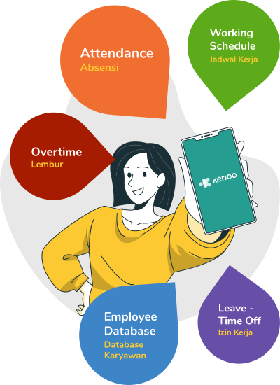
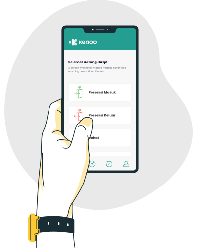
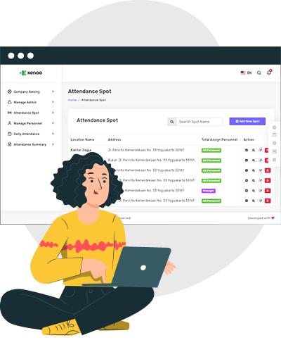
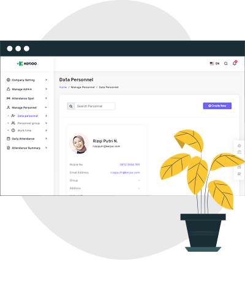

Tinggalkan Absensi Manual
Beralihlah Menggunakan Kerjoo
Absensi Online, Lembur Online, Cuti Online


Karyawan bisa melakukan absensi di mana saja dari handphone mereka dengan selfie tapi tetap terpantau HR sehingga meminimalisir kecurangan.
Adanya fitur otomatisasi proses pencatatan kehadiran dan lembur secara real time yang dilengkapi dengan validasi GPS, dan Facial Recognition makin memudahkan HR mengelola karyawannya.
HR bisa leluasa untuk mengatur jadwal shifting kerja yang kompleks. Karyawan bisa memantau jadwal kerja dari aplikasi di handphone.
HR bisa lebih mudah melakukan review dan evaluasi kepada karyawan berdasarkan laporan kehadiran karyawan pada halaman admin HR.
Pandemi menuntut perusahaan membatasi karyawannya dengan sistem remote working maupun Work From Home (WFH). HR perlu sistem yang bisa memberikan solusi serta mendukung kebijakan perusahaan terkait kesehatan, jam kerja, dan waktu kerja karyawan. Kerjoo memastikan HR tetap bisa memantau kinerja karyawan dan bisa semakin meningkat dengan pilihan kerja yang lebih fleksibel.
Keuntungan tersebut diantaranya:

Karyawan yang Work From Home tidak perlu mengeluarkan biaya transport, dan perusahaan dapat mengurangi biaya operasional lainnya seperti biaya listrik, sewa kantor, dan lain-lain.
Perusahaan lebih fleksibel dalam proses rekrutmen karyawan karena tidak memperhitungkan lokasi domisili, sehingga karyawan yang terpilih adalah karyawan yang benar-benar sesuai dengan kriteria kebutuhan perusahaan.
Data kehadiran berupa jam masuk, jam istirahat, jam keluar, dan jam lembur akan terekam secara otomatis sesuai dengan lokasi karyawan melakukan absensi, sehingga HR bisa melakukan evaluasi secara tepat untuk memutuskan memberikan reward ataupun punishment sesuai peraturan perusahaan.
Karyawan bisa langsung mulai bekerja dari rumah tanpa harus melakukan perjalanan jauh ke kantor. Tidak ada waktu dan energi yang terbuang selama perjalanan. Kondisi ini membuat karyawan lebih fresh saat mulai bekerja yang sangat mempengaruhi produktivitas dan efektifitas kerja.

 Ada yang bisa saya bantu?
Ada yang bisa saya bantu?